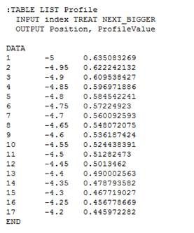
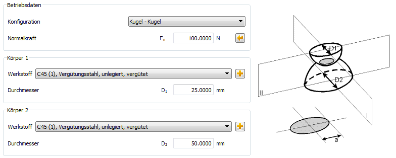

|
|
|


赫兹压力
使用此模块可计算两个物体之间的赫兹压力。当滚动副受到垂直于接触面的载荷时，点接触会产生椭圆压扁，而线接触会产生矩形压扁。
对于一般接触情况，采用参考文献 [107] 中介绍的理论。基于该参考文献，使用三角形压力分布单元网格来计算具有任意轮廓的物体之间的线接触，同时施加给定的垂直线载荷。假设物体在其轮廓垂直方向上无限延伸。两个物体的轮廓取自两个数据文件。这些文件有三列，分别包含索引、位置和轮廓值。

图 58.1：物体轮廓数据文件的格式
此文件中的所有值必须以毫米为单位输入。
每个物体的轮廓文件可以具有不同的离散化和位置值。但是，我们建议您对两个物体使用相同的离散化和位置。结果的精度将取决于轮廓点的密度（离散化长度）。边缘接触效应也会被考虑。假设接触面是无摩擦的。此通用接触选项使用户能够生成次表面应力的 2D 图以及沿轮廓的接触压力图。您可以在上述参考文献中找到有关所用计算和方程的更多详细信息。
赫兹方程用于帮助计算最大压力（赫兹压力）以及两个物体（球、圆柱、椭球、平面；凸或凹）的接近程度。计算公式取自《Advanced Mechanics of Materials》第 6 版 [108]。计算点接触的基本原理是：物体的直径在两个主平面上定义，然后由此定义等效直径。线接触的计算在一个主平面内进行，因此只有一个等效直径。物体内部最大主剪应力的位置和值也会被确定。
圆柱/圆柱配置的近似值已使用 Weber/Banaschek [21] 的论文计算。Norden 著作 [15] 中的公式 (55) 用于计算圆柱面积的近似值。

图 58.2：赫兹压力主窗口
在赫兹压力主界面（参见图 58.2）中，您可以定义法向力、配置，以及直径（在线接触情况下还包括支承长度 leff）和两个物体的材料：
您可以选择以下配置之一：
- 球 - 球
- 球 - 圆柱
- 球 - 椭球
- 球 - 平面
- 椭球 - 椭球
- 椭球 - 圆柱
- 椭球 - 平面
- 圆柱 - 圆柱
- 圆柱 - 平面
- 任意接触
在主界面右侧，会显示当前配置的图像，以帮助您更好地理解输入值。
对于法向力，还有一个选型选项。如果单击法向力旁边的选型按钮，可以输入所需的赫兹压力，系统将据此计算法向力。
如果支承区域具有凹形弯曲，则必须将直径输入为负值。负直径仅适用于物体 2 的情况。
Hertzian Pressure
Use this module to calculate the Hertzian pressure between two bodies. In the case of a load on a rolling pair that is applied vertically to the contact surface, elliptical flattening occurs for point contact, and rectangular flattening occurs in the case of linear contact.
For the case of general contact, the theory presented in reference [107] is used. Based on this reference, a grid of triangular pressure distribution elements is used to calculate the line contact between bodies with an arbitrary profile, while applying a given vertical line load. The bodies are assumed to extend infinitely, vertical to their profile. The profiles of the two bodies are taken from two data files. The files have three columns that contain the index, the position and the profile value.
Figure 58.1: Format of the body profile data file
All values in this file must be entered in millimeters.
The profile file for each body can have different discretization and position values. However, we recommend you use the same discretization and position for both bodies. The accuracy of the results will depend on the density of the profile points (discretization length). Edge contact effects are also considered. The contacting surfaces are assumed to be frictionless. This general contact option enables the user to generate a 2D plot of the subsurface stresses and a plot of the contact pressure along the profiles. You will find more detailed information about the calculations and equations used in the reference document mentioned above.
The Hertzian equations are used to help calculate the maximum pressure (Hertzian pressure) and also the proximity of the two bodies (ball, cylinder, ellipsoid, plane; convex or concave). The calculation formulae have been taken from "Advanced Mechanics of Materials, 6th Edition [108]. The underlying principle for calculating point contact is that the diameter of the bodies is defined on two main planes, from which an equivalent diameter is then defined. The calculation is performed in one main plane for linear contact, so there is only one equivalent diameter. The location and value of the maximum principal shear stress in the interior of the body are also determined.
An approximation of the cylinder/cylinder configuration has been calculated using the dissertation from Weber/Banaschek [21]. The formula (55) from Norden's book [15] is used to calculate the approximation of the cylinder area.
Figure 58.2: Main window for Hertzian pressure
In the main screen for Hertzian pressure (see Figure 58.2) you can define the normal force, the configuration, and also the diameter (and, in the case of linear contact, the supporting length leff) and the materials of the bodies:
You can select one of these configurations:
- Ball - ball
- Ball - cylinder
- Ball - ellipsoid
- Ball - plane
- Ellipsoid - ellipsoid
- Ellipsoid - cylinder
- Ellipsoid - plane
- Cylinder - cylinder
- Cylinder - plane
- Any contact
On the right, in the main screen, an image of the current configuration is displayed to help you to understand the input values better.
For normal force there is also a sizing option. If you click the sizing buttons next to the normal force, you can enter the required Hertzian pressure, and the system will then calculate the normal force from it.
If the support area has a concave bend then you must enter the diameter as a negative value. Negative diameters are only possible in the case of Body 2.